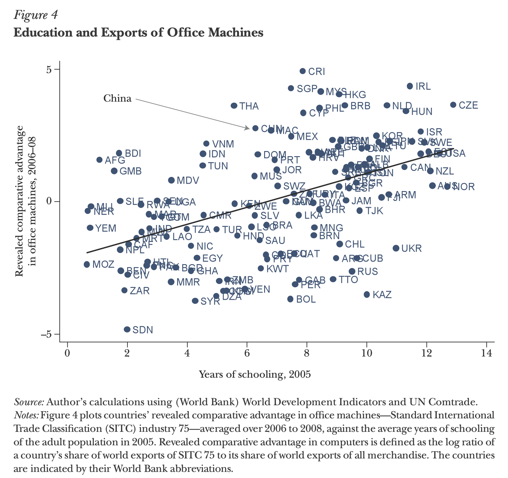
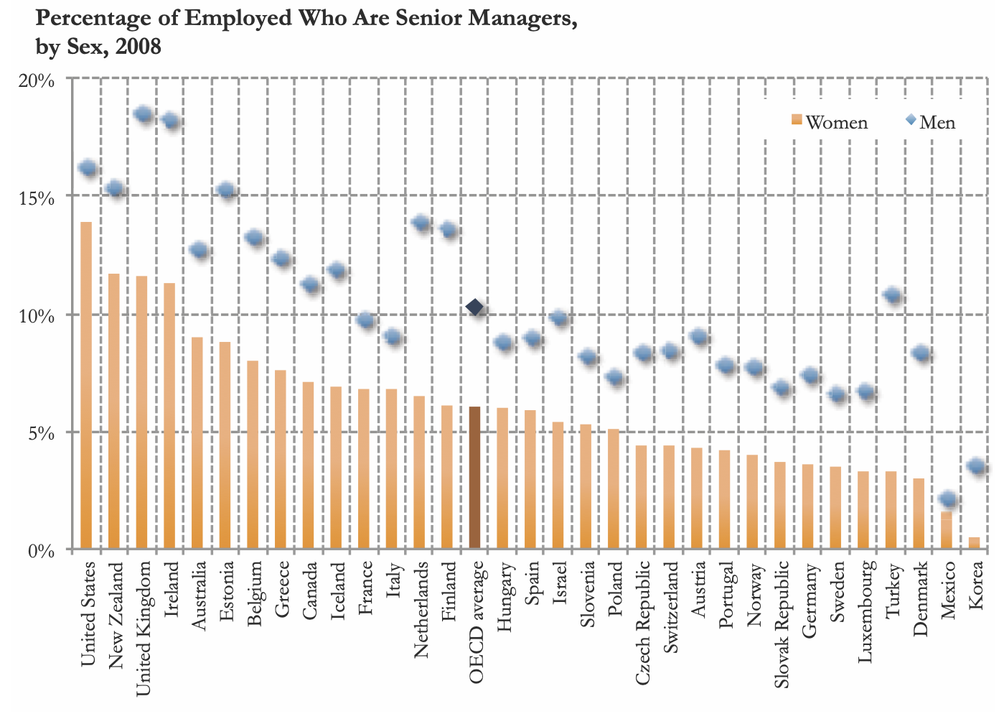

Chapter 6 Visualisierung von Daten
Verwendete Pakete
library(here)
library(tidyverse)
library(icaeDesign)
library(data.table)
library(ggpubr)
library(ggrepel)
library(scales)
library(tufte)
library(gapminder)
library(viridis)
library(latex2exp)
library(WDI)
library(countrycode)Um das Paket icaeDesign zu installieren müssen Sie foldendermaßen vorgehen:
library(devtools)
devtools::install_github("graebnerc/icaeDesign")Einleitung
In diesem Kapitel lernen Sie mit Hilfe des Pakets ggplot2 Ihre Daten ansprechend zu visualisieren.
Der erste Abschnitt ist dabei optional und beschäftigt sich mit den theoretischen Grundlagen von ggplot2. Hier disktutieren wir die Abgrenzung zwischen dem ggplot2- und base-Ansatz zur Datenvisualisierung in R und führen mit der in Wickham (2010) entwickelten Grammatik für Grafiken das theoretische Fundament für ggplot2 ein. Diese beiden Abschnitte sind recht abstrakt, aber helfen Ihnen die interne Logik von ggplot2 besser zu verstehen.
Im zweiten Abschnitt werden die grundlegenden Elemente einer Grafik in ggplot2 beschrieben und eine erste Beispielgrafik Stück für Stück erstellt. Der dritte Abschnitt erläutert anhand von Beispielen wie die gängigsten Visualisierungsarten in ggplot2 erstellt werden können.
Danach werden ausgewählte fortgeschrittene Techniken, wie z.B. die Visualisierung von Regressionsergebnissen oder das Erstellen von Plots mit mehreren Abbildungen, eingeführt. Im fünften Abschnitt zeigen wir aufbauend auf Schwabish (2014) wie typische Fehler in der Datenvisualisierung vermieden werden können. Der sechste Abschnitt illustriert ausgewählte Manipulationsstrategien bei der Datenvisualisierung. Im letzten Abschnitt finden Sie Empfehlungen für weiterführende Literatur
6.1 Optional: Theoretische Grundlagen
6.1.1 ggplot2 vs. base plot
Wie so oft bietet R verschiedene Ansätze zur Datenvisualisierung. Die beiden prominentesten sind dabei die in der Basisversion von R integrierten Visualisierungsfunktionen, häufig als base bezeichnet, und das Paket ggplot2 (Wickham 2016).
Die Frage ‘Welcher Ansatz ist nun besser?’ ist nicht leicht zu beantworten, insbesondere da beiden Ansätzen eine sehr unterschiedliche Design-Philosophie zugrunde liegt: base funktioniert dabei wie ein Stift und ein Blatt Papier: sie haben ein leeres Blatt, welches sie mit dem Aufruf bestimmter plot-Funktionen beschreiben. Hierbei wird kein besonderes R-Objekt erstellt, in dem die Grafik
gespeichert wird - vielmehr speichern Sie am Ende ihr ‘vollgemaltes Blatt’ entweder als Bild ab, oder Sie verwerfen es und beschreiben ein neues ‘Blatt’.
In ggplot2 werden die Grafiken dagegen ‘scheibchenweise’ in einer Art Liste zusammengesetzt. Diese Liste enhält dann eine vollständige Beschreibung der Grafik im Sinne einer geschichteten Grammatik für Grafiken. Dabei findet kein ‘Malprozess’ statt: die finale Grafik erst dann erstellt wenn auf die resultierende Liste eine print-Funktion angewandt wird.
Am Ende des Tages werden Sie wenige Dinge finden, die sie nur mit base oder nur mit ggplot2 erreichen können. Und wahrscheinlich gilt für die meisten, dass sie einfach bei dem Ansatz hängen bleiben, der Ihnen am Anfang intuitiv am besten gefallen hat. Ich habe in der weiterführenden Literatur einige Diskussionsbeiträge zum Theme base vs. ggplot2 gesammelt und fasse mich hier daher kurz: in dieser Einführung verwenden wir ggplot2. Ich finde, dass die resultierenden Grafiken einen Tick schöner, die Syntax ein wenig einfacher und die Dokumentation im Internet ein wenig besser ist. Vor allem finde ich den Code leichter lesbar und die den von Wickham (2010) vorgeschlagenen grammar of graphics Ansatz sehr intuitiv.
Wenn Sie dagegen lieber mit base arbeiten wollen - kein Problem. Es finden sich im Internet gerade auf Englisch viele exzellente Einführungen. Und im Endeffekt ist die einzige relevante Frage: haben Sie auf eine für Sie möglichst unterhaltsame Art und Weise einen guten Graphen produziert? Welches Paket Sie dafür verwendet haben, interessiert am Ende des Tages niemanden…
6.1.2 Einleitung zu Wickham’s grammar of graphics
Die Funktion von ggplot2 ist leichter nachzuvollziehen wenn man weiß wodurch das Paket inspiriert wurde. In diesem Fall war es das Konzept der Grammar of Graphics (Wilkinson 1999), beziehungsweise die Interpretation des Konzepts von Wickham (2010).
Dieses Konzept startet von dem Wunsch eine ‘Grammatik’ für Grafiken zu entwickeln. Eine Grammatik wird hier als eine Sammlung von Konzepten verstanden aus denen sämtliche Grafiken hergestellt werden können eine vollständige Beschreibung der Grafik sozusagen . Sie wie die Grammatik der deutschen Sprache eine Sammlung von Wörtern und Regeln darstellt, aus denen jede Menge (mehr oder weniger sinnvolle) Aussagen hergestellt werden können, verstehen wir unter einer Grammatik für Grafiken eine Sammlung von Konzepten und Regeln aus denen wir jede Menge (mehr oder weniger sinnvolle) Grafiken herstellen können.
Im Gegensatz zu der ursprünglich von Wilkinson (1999) vorgestellten Grammatik folgt die Grammatik von Wickham (2010) einer klaren geordneten Struktur: jeder Teil der Grammatik ist unabhängig vom Rest, und eine Grafik wird vollends dadurch spezifiziert, dass die einzelnen Teile Stück für Stück zusammen geführt werden.
Nach Wickham’s Grammatik besteht jede statistische Grafik aus den folgenden Komponenten:
Einem Standard-Datensatz gemeinsam mit den Funktionen (engl.: mappings), die bestimmten Variablen aus dem Datensatz eine so genannten Ästhetik (engl.: aesthetic) zuweisen. Die so genannten mappings (es handelt sich dabei eigentlich um einfache Funktionen) verlinken eine Variable in den Daten mit einer Ästhetik in der Grafik. Beispielsweise könnten wir die Variable ‘Jahr’ in den Daten mit der Ästhetik ‘x-Achse’, die Variable ‘BIP’ mit der Ästhetik ‘y-Achse’ und die Variable ‘Land’ mit der Ästhetik ‘Farbe’ verlinken.
- Ein oder mehrere Ebenen; jede Ebene besteht dabei aus einem geometrischem Objekt, einer statistischen Transformation, einer Positionszuweisung und, optionalerweise, einem von (1) abweichenden besonderen Datensatz und den entsprechenden aesthetic mappings.
- Von besonderer Relevanz sind dabei die geometrischen Objekte,
geoms, denn sie bestimmen um was für einen Plot es sich handelt: verwenden wir alsgeomsPunkte bekommen wir ein Streudiagramm, bei Linien alsgeomswird es ein Linienplot, usw. Diegeomsvisualisieren also die Ästetiken, aber bestimmtegeomskönnen natürlich nur bestimmte Ästetiken repräsentieren: dergeom‘Punkt’ z.B. hat einexund einey-Komponente (also einePosition), eineGröße, eineFormund eineFarbe. Andere Ästhetiken machen für Punkte keinen Sinn. - Da wir nicht notwendigerweise die exakten Werte der Variable an die Ästhetik weitergeben wird die Möglichkeit einer statistischen Transformation offen gelassen: eventuell wird nicht der Variablenwert, sondern z.B. der Logarithmus dieses Wertes an die entsprechende Ästhetik weitergegeben. Natürlich kann die statistische Transformation auch weggelassen werden - in diesem Fall sprechen wir von der Transformation
identity- die Daten werden nicht verändert, sondern direkt an die Ästhetik weitergegeben. Andere häufig verwendete Transformationen sindboxplot(wenn wir die Daten in einem Boxplot zusammenfassen wollen),bin(wenn wir die Daten in einem diskreten Histogramm darstellen wollen) oderdensity(wenn wir an der Wahrscheinlichkeitsdichte der Beobachtungen interessiert sind). - Die Positionszuweisungen spielen nur eine Rolle wenn die Positionen der
geomsangepasst werden muss, z.B. um Überlappungen zu vermeiden. Ein typisches Beispiel ist auch das Schachteln von Balkendiagrammen.
Einer Skala für jedes aesthetic mapping. Sie beschreibt die genaue Art des Mappings zwischen Daten und Ästetiken. Entsprechend handelt es sich bei einer Skala in diesem Sinne hier um eine Funktion gemeinsam mit Parametern. Am besten kann man sich das bei einer farblichen Skala vorstellen, die bestimmte Werte in einen Farbenraum abbildet.
Einem Koordinatensystem, welches zu den Daten und Ästetiken und geometrischen Objekten passt. Am häufigsten wird hier sicher das kartesischen Koordinatensystem verwendet, aber für Kuchendiagramme bietet sich z.B. das polare Koordinatensystem an.
Eine optionale Facettenspezifikation (engl.: facet specification), die verwendet werden kann um die Daten in verschiedene Teil-Datensätze aufzusplitten. So möchten wir wir vielleicht die Dynamik des BIP über die Zeit abbilden, aber einen separaten Unter-Plot für jedes einzelne Land erstellen. In diesem Fall verwenden wir eine Facettenspezifikation, die für jedes Land einen Teildatensatz erstellt.
Alle Komponenten bleiben dabei unabhängig von einander sind: die Daten z.B. sind unabhängig vom Rest, weil die gleiche Grafik für unterschiedliche Daten produziert werden kann: “Daten machen aus einer abstrakten Grafik eine konkrete Grafik” (Wickham 2010, 10)
Das Besondere an der so formulierten Grammatik ist, dass man mit den Komponenten 1 - 5 so ziemlich jede statistische Grafik beschreiben kann. Das Paket ggplot2 macht sich das zu Nutze: es formalisiert diese Regeln in R, sodass Sie mit dem entsprechenden R Code quasi jede Grafik beschreiben können - und dann durch R erstellen lassen können. Dadurch ist auch auch die Vorgehensweise zunächst ein Objekt mit der Beschreibung der Grafik zu erstellen und die Grafik dann am Ende durch Anwendung einer print-Funktion auf diese Beschreibung herzustellen motiviert: denn Sie können das Objekt mit der Beschreibung vorher bereits speichern und weitergeben und dann zu einem späteren Zeitpunkt erst die eigentlich Grafik erstellen. Dieses Vorgehen machen wir uns später zunutze wenn wir mehrere Sub-Abbildungen in einer großen Grafik gemeinsam abbilden wollen.
Wie Sie später sehen werden repräsentiert die Syntax von ggplot2 genau diese theoretische Beschreibung von Grafiken. Hier greifen wir mit einem kleinen Beispiel vor:
example_data <- data.frame(
Variab1=1:3,
Variab2=2:4,
Variab3=c("a", "a", "b")
)
ggplot(
data = example_data,
mapping = aes(x=Variab1,
y=Variab2,
color=Variab3)
) +
layer(
geom = "point",
stat = "identity",
position = "identity") +
scale_color_discrete(
aesthetics = c("color")
) +
coord_cartesian(
xlim = c(0, 4),
ylim = c(0, 5)
) 
ggplot() erstellt eine Liste, in der die Grafik-Spezifikationen gespeichert werden und akzeptiert über die Argumente data und mapping die Standard-Daten und Standard-Mappings. Es korrespondiert damit zu Punkt (1) oben.
Als nächstes wird mit layer() eine neue Ebene spezifiziert. Wie in der Theorie spezifizieren wir die Ebene über das Argument geom bezüglich der auf ihr abzubildenden geometrischen Objekte (hier: Punkte), über stat bezüglich der zu verwendeten statistischen Transformation (hier: keine Transformation, sondern die Daten identisch zu ihren Werten im Standard-Datensatz) und über position bezüglich der Positionszuweisungen (auch hier: keine besonderen Positionszuweisungen).
Als nächstes spezifizieren wir die Skala. Für die Ästhetik ‘Position’ der Variablen Variab1 und Variab2 ist keine Übersetzung notwendig, aber für den Link zwischen den Werten von Variable Variab3 und der Ästhetik ‘Farbe’ müssen wir eine explizite Funktion verwenden. Mit der Funktion scale_color_discrete() weisen wir also jedem Wert der (diskreten) Variable Variab3 eine Farbe zu.
Schließlich legen wir mit coord_cartesian() noch das zu verwendende Koordinatensystem fest indem wir mit den Argumenten xlim und ylim die Länge der x- und y-Achse spezifizieren. Eine besondere Facettenspezifikation verwenden wir hier dagegen nicht.
Wie Sie später sehen werden, verwenden wir in ggplot2 häufig Abkürzungen für die in diesem Beispiel verwendeten ‘Originalfunktionen’. So gibt es für eine Ebene mit dem geom ‘Punkte’ die Abkürzung geom_point(). Auch muss nicht jedes Element explizit spezifiziert werden: da z.B. die meisten Grafiken ein kartesisches Koordinatensystem verwenden ist das als Standard-Koordinatensystem in ggplot2 implementiert und Sie müssen nur explizit ein Koordinatensystem spezifizieren wenn Sie vom Standardwert abweichen wollen.
Wenn Sie sich genauer mit der hierachichen Grammatik, die ggplot2 zugrundeliegt, kann ich Ihnen nur den Originalartikel von Wickham (2010) empfehlen.
6.2 Grundlegende Elemente von ggplot2-Grafiken
6.2.1 Elemente eines ggplot
Analog zu der gerade vorgestellten Theorie besteht jeder ggplot aus den folgenden Komponenten:
Das Basisobjekt, welches einen leeren Plot erstellt und die Standardwerte für den zu verwendeten Datensatz und die entsprechenden Ästetiken definiert.
Verschiedenen Ebenen (
layer), auf denen die - ggf. statistisch transformierten - Variablen der Daten auf bestimmten Ästetiken (aesthetics) als geometrische Objekte (geoms) auf den entprechenden Posititionen (position) abgebilet werden.
Die folgenden Elemente sind ebenfalls Teil eines jeden Plots, werden aber nicht notwendigerweise explizit spezifiziert sondern einfach in der sich aus den Ebenen ergebenden Standard-Spezifikation übernommen:
- Skalen: Für jedes
mappingzwischen einer Variable und einer Ästetik gibt es eine Skala, die mit entsprechenden Funktionen geändert werden kann. So modifiziert die Funktionscale_color_discrete()das Mapping zwischen einer diskreten Variable und der Farbskala. - Labels: Jeder Plot kann mit Labels, wie Titeln, Achsenbeschriftungen, Legenden oder sonstigem Text ergänzt werden.
- Koordinaten: Standardmäßig bilden wir Grafiken auf einem kartesischen Koordinatensystem ab. Sie können die Ausschnitte dieses Koordinatensystems beliebig anpassen, die Achsen transformieren, oder sogar ein anderes Koordinatensystem verwenden (siehe z.B. hier).
- Facetten Wenn wir mehrere Facetten verwenden teilen wir die Daten gemäß einer Variable in mehrere Subdatensätze auf und bilden alle separat ab. Unten sehen Sie ein Beispiel wo wir separate Abbildungen für jedes Land im Datensatz erstellen.
Hier ist eine Beispielimplementierung:
offenheit_plot <- ggplot( # <- Erstellt das Basisobjekt
data = offenheit, # <- Spezifiziert Standard-Datensatz
mapping = aes( # <- Spezifiziert die Mappings zu den Ästetiken
x=trade_total_GDP, # Verbinde Ästetik 'x-Achse' & Variable 'trade_total_GDP'
y=gvnt_cons) # Verbinde Ästetik 'y-Achse' & Variable 'gvnt_cons'
) +
layer( # <- Erstelle einen neuen Layer
geom = "point", # Die Geoms auf diesem Layer sind Punkte
stat = "identity", # Die Daten werden nicht statistisch transformiert
position = "identity", # Positionen der Daten werden nicht geändert
mapping = aes(color=Land) # Zusätzlich zur Standard-Ästetik oben: verbinde
# Variable 'Land' mit der Ästetik 'color'
) +
# Erstelle noch einen Layer mit der geom 'smooth' (Abkürzung für layer(...)):
geom_smooth(
method = "lm" # <- Verwende eine lineares Modell für die geom 'smooth'
) +
# Gebe der Skala der x-Achse einen neuen Namen:
scale_x_continuous(name = "Handel / BIP (in %)") +
# Gebe der Skala der y-Achse einen neuen Namen:
scale_y_continuous(name = "Staatsausgaben") +
# Gebe der Farbskala einen neuen Namen:
scale_color_discrete(name="Land") +
labs(title = "Handelsoffenheit & Staatsausgaben 1990-2018") + # Ergänze Plot-Titel
coord_cartesian() + # Verwende eine kartesisches Koordinatensystem
facet_null() # Verwende nur eine FacetteDieser Code erstellt die einzelnen Elemente des Plots, die in ggplot2 separat erstellt und am Ende übereinander gelegt werden:
#> `geom_smooth()` using formula 'y ~ x'
Daraus ergibt sich dann der Gesamtplot:
#> `geom_smooth()` using formula 'y ~ x'
#> `geom_smooth()` using formula 'y ~ x'
#> `geom_smooth()` using formula 'y ~ x'Die Rolle der Facetten wird hier deutlich:
#> `geom_smooth()` using formula 'y ~ x'
#> `geom_smooth()` using formula 'y ~ x'
#> `geom_smooth()` using formula 'y ~ x'
Der modulare Aufbau eines ggplot macht es einfach eine Grafik sukzessive zu ändern: wenn Sie z.B. von einem Streudiagramm zu einem Liniendiagramm wechseln wollen müssen Sie nur die geoms ändern - die restlichen Komponenten des Plots können identisch bleiben:
# Code für ein Streudiagramm
streudiagramm <- ggplot(offenheit_red,
aes(x=year, y=trade_total_GDP)
) +
geom_point() +
theme_bw()
# Code für ein Liniendiagramm
liniendiagramm <- ggplot(offenheit_red,
aes(x=year, y=trade_total_GDP)
) +
geom_line() + # <- nur diese Zeile verändert
theme_bw()
6.2.2 Beispiel Workflow
Hier betrachten wir den Workflow einer einfachen Grafik. Sie werden unten noch diverse Techniken lernen, wie Sie diese Grafik aufhübschen können. Übrigens ist die Reihenfolge der Schritte nicht weiter relevant, lediglich der erste Schritt muss vor den anderen kommen. Was den Rest angeht sind Sie aber in der Praxis recht flexibel denn Sie erstellen ja am Anfang eine Liste, zu der Sie in den weiteren Schritten weitere Beschreibungsdetails hinzufügen. Die Grafik wird aus dieser durch ggplot() erstellten Liste erst bei Aufruf mit einer print-Funktion erstellt.
1. Schritt: Aufbereitung der Daten
Ihre Daten sollten ‘tidy’ sein, genauso wie im letzten Kapitel beschrieben. Im folgenden gehen wir davon aus, dass wir einen entsprechend aufbereiteten Datensatz haben:
#> Land Jahr HandelGDP
#> 1 AUT 1965 48.23931
#> 2 AUT 1966 48.92554
#> 3 AUT 1967 48.30854
#> 4 AUT 1968 49.01388
#> 5 AUT 1969 52.72526
#> 6 AUT 1970 54.86039Dieser kleine Beispieldatensatz enthält Informationen über das Verhältnis von Handelsströmen und BIP in Österreich seit 1965.
2. Schritt: Auswahl des Standarddatensatzes und der Variablen
Wir entscheiden uns, dass der gerade aufbereitete Datensatz die Basis für unsere Visualisierung darstellen soll. Natürlich können wir auch noch Daten aus anderen Datensätzen hinzufügen, aber dieser Datensatz soll unser Standard-Datensatz für die Grafik sein, die verwendet wird wenn wir nichts anderes spezifizieren. Genauso spezifizieren wir die Standard-Ästetik-Links für die Abbildung. Eine Ästetik ist z.B. die Größe, Farbe oder Achse der Abbildung. Es ist hilfreich am Anfang Standardwerte für die Verknüpfung von Variablen aus dem Datensatz mit Ästetiken in der Grafik zu spezifizieren.
Im Beispiel wollen wir die Variable Jahr mit der x-Achse und die Variable HandelGDP mit der y-Achse verbinden. Da es sich um die Standardwerte handelt werden Sie in der Funktion ggplot() spezifiziert:
aut_trade_plot <- ggplot(
data = aut_trade,
mapping = aes(x = Jahr,
y = HandelGDP)
)ggplot() erstellt das Grafik-Objekt, bei dem es sich um eine recht komplexe Liste handelt:
typeof(aut_trade_plot)#> [1] "list"Die Funktion ggplot() wird in der Regel mit zwei Argumenten verwendet: data spezifiziert den Standard-Datensatz für die Grafik und mapping die aesthetic mappings, welche die Variablen in data zu den ästhetischen Komponenten der Grafik verlinken. Wenn Sie den optionalen Abschnitt zur Grammar of Graphics gelesen haben, werden Sie die Konzepte sofort wiedererkennen!
Wie oben beschrieben wird die Grafik bei ggplot2 erst erstellt, wenn Sie das Grafik-Objet mit einer print-Funktion aufrufen. Das passiert automatisch, wenn Sie das Objekt als solches aufrufen:
aut_trade_plot
Da wir bislang nur die Standardwerte definiert haben ist die Grafik noch recht leer. Zumindest sehen wir, dass die Achsen die Variablen unseres Datensatzes repräsentieren.
3. Schritt: Hinzfügen von Ebenen mit geometrischen Objekten
Als nächstes wollen wir die geometrischen Objekte spezifizieren, mit denen die Ästetiken auf dem Plot dargestellt werden sollen. Im vorliegenden Fall möchten wir z.B. unsere Beobachtungen mit einer Linie visualisieren. Das geht mit der Funktion geom_line(): sie fügt einen geom der Art ‘Linie’ hinzu. Im übrigen sind die Namen für alle verschiedenen geoms gleich aufgebaut, es ist immer geom_*(), wobei * für die Abkürzung des entsprechenden geoms steht.36
Die Funktionen geom_*() verlangen in der Regel kein zusätzliches Argument, verwenden aber einige Standardwerte über die Sie Bescheid wissen sollten. data und mapping funktionieren wie oben beschrieben und haben als Standardwert die anfangs in ggplot() angegebenen Werte. stat spezifiziert statistische Transformationen, die an den Daten vor dem Plotten vorgenommen werden sollen. Wenn die Daten bereits korrekt aufbereitet wurden ist das häufig nicht notwendig und der Standardwert stat='identity' ist ausreichend - in diesem Fall werden die Daten so abgebildet wie sie im Datensatz vorhanden sind.37 Das gleiche gilt für position: auch hier ist der Standardwert position='identity', aber Sie können über verschiedene Funktionen die Position der geoms anpassen, z.B. um Überlappungen zu vermeiden.38
Da wir zu unserer Grafik aut_trade_plot eine Ebene hinzufüen wollen verwenden wir einfach den Operator +:
aut_trade_plot <- aut_trade_plot +
geom_line()
aut_trade_plot
Am Anfang ein Grafikobjekt zu definieren und dann neue Elemente Stück für Stück mit + hinzuzufügen ist das Grundprinzip von ggplot2. Auch hier ist die Verbindung zu Wickham’s Grammar of Graphics offensichtlich.
Im Beispiel haben wir geom_line() ohne ein einziges Argument aufgerufen. Wir könnten die Argumente data und mapping verwenden, aber da wir hier die in Schritt 1 definierten Standardwerte verwenden besteht dazu keine Veranlassung.
Wir können durchaus mehrere Ebenen nacheinander hinzufügen. Wenn wir die einzelnen Beobachtungen z.B. noch durch Punkte verdeutlichen wollen, dann können wir einfach eine weitere Ebene mit dem geom ‘Punkt’ hinzufügen. Das geht mit der Funktion geom_point() und da wir die gleichen Standardwerte wie vorher verwenden sind hier auch keine Argumente nötig:
aut_trade_plot <- aut_trade_plot +
geom_point()
aut_trade_plot
Um den Trend der Entwicklung zu verdeutlichen möchten wir vielleicht noch einen Trend hinzufügen. Hierzu verwenden wir die Funktion geom_smooth():
aut_trade_plot <- aut_trade_plot +
geom_smooth()
aut_trade_plot
4. Schritt: Anpassen der Skalen
Im nächsten Schritt wollen wir die Skalen der Abbildung anpassen. Für uns sind hier vor allem die Skalen der y-Achse und der x-Achse relevant.39 Daher verwenden wir die Funktionen scale_x_continuous() und scale_y_continuous(), schließlich handelt es sich bei den auf diesen Skalen abgebildeten Variablen um kontinuierliche Variable. Wenn es diskrete Daten gewesen wären, würden wir die Funktionen scale_x_discrete() und scale_y_discrete() verwenden.
Beginnen wir mit der x-Achse. Hier möchten wir vor allem die auf der Skala angegeben Jahreszahlen anpassen und die Länge der Skala auf den Zeitraum 1965-2018 anpassen.
Die abzubildenden Jahre spezifizieren wir mit dem Argument breaks, dem wir einen Vektor mit den abzubildenden Jahreszahlen übergeben. Die Limits der Skala können wir mit dem Argument limits spezifizieren indem wir einen Vektor mit zwei Zahlen, dem unteren und dem oberen Limit, übergeben:
aut_trade_plot <- aut_trade_plot +
scale_x_continuous(limits = c(1965, 2018),
breaks = seq(1965, 2017, 5))
aut_trade_plot
Unschön hier ist nur der ‘Rand’, den ggplot2 automatisch an den jeweiligen Enden der Skalen hinzufügt. Dieser Rand kann durch das Argument expand geändert werden. Wie übergeben expand im einfachsten Falle einen Vektor mit zwei Werten: der erste Wert bestimmt eine Konstante, die auf beiden Seiten zur Skala hinzuaddiert wird, der zweite Wert einen Skalar der die Skala um den ensprechenden Wert multiplikativ streckt. In unserem Fall sollen beide Werte gleich 0 sein, denn wir wollen, dass die Skala 1960 anfängt und 2017 aufhört, so wie über das Argument limits vorher spezifiziert:
aut_trade_plot <- aut_trade_plot +
scale_x_continuous(limits = c(1965, 2018),
breaks = seq(1960, 2017, 5),
expand = c(0, 0)
)
aut_trade_plot
Das ist schon nicht so schlecht. Als nächstes beschäftigen wir uns mit der y-Achse. Hier möchten wir auch die Limits und die angegebenen Werte verändern, und zwar von 0 bis 110. Das geht wieder über die Argumente limits und breaks.
Darüber hinaus wäre es schön, den Namen der Achse anzupassen. Standardmäßig ist das der Name der Variable im Datensatz, aber hier wäre es schöner wenn dort einer ‘Handel / BIP’ stehen würde. Das erledigen wir mit dem Argument name.40
Auch möchten wir wieder den häßlichen Rand am oberen und unteren Ende der Skala eliminieren und verwenden dazu das Argument expand wie vorher:
aut_trade_plot <- aut_trade_plot +
scale_y_continuous(name = "Handel / BIP",
limits = c(0, 110),
breaks = seq(0, 110, 10),
expand = c(0, 0)
)
aut_trade_plot
5. Schritt: Titel
Titel und andere so genannte ‘Labels’ können Sie mit der Funktion labs() sehr einfach hinzufügen. labs() akzeptiert drei optionale Argumente: title für den Titel, subtitle für den Untertitel und caption für eine Fußnote, die sich besonders gut eignet um die Quelle der Daten anzugeben.
aut_trade_plot <- aut_trade_plot +
labs(title = "Handel und BIP in Österreich",
subtitle = "Die Entwicklung zwischen 1965 und 2018",
caption = "Quelle: Weltbank.")
aut_trade_plot
Weit verbreitet ist auch die Funktion ggtitle(), die genauso funktioniert, aber nur die Argumente label (für den Titel) und subtitle akzeptiert.
6. Schritt: Grundlegende Veränderungen mit theme()
Achtung, Kleinkram-Alarm! Zwar schaut die Grafik jetzt schon erträglich aus, aber es gibt natürlich noch diverse Dinge, die wir verschönern könnten. Warum der Hintergrund z.B. standardmäßig Grau und die Linien in Weiß sind, weiß niemand. Solcherlei Veränderungen können Sie über die Funktion theme() vornehmen. Wir betrachten hier nur ein paar Beispiele, eine Übersicht zu allen möglichen Argumenten finden sie hier.
Um den Hintergrund des Plot im Abbildungsbereich zu verändern verwenden wir das Argument panel.background. Solcherlei Veränderungen werden immer über bestimmte Funktionen durchgeführt, die sich nach der Art des zu veränderten Grafikbestandteils richten. Im Falle des Plot-Hintergrundes ist das ein Rechteck, sodass wir die Funktion element_rect() verwenden, die zahlreiche Gestaltungsmöglichkeiten erlaubt.41 Hier wollen wir den Hintergrund weiß füllen, wir schreiben also element_rect(fill = "white"):
aut_trade_plot <- aut_trade_plot +
theme(panel.background = element_rect(fill = "white"))
aut_trade_plot
Das ist besser, allerdings möchten wir schon einen Grid haben um die Achsen besser lesen zu können. Das entsprechende Argument ist panel.grid, bzw. panel.grid.major und panel.grid.minor für die Linien auf, bzw. zwischen den auf den Achsen aufgeschriebenen Werten .42 Damit wir den Plot nicht überlasten malen wir aber nur auf die auf den Achsen auch tatsächlich abgebildeten Werte Linien, verwenden also das Argument panel.grid.major. Da es sich hier um Linien handelt verwenden wir die Funktion element_line(), die wir hier noch über die Farbe des Grids informieren: element_line(colour = "grey"). Auch die fehlenden Achsenlinien machen den Plot nicht schöner. Wir fügen Sie über das Argument axis.line mit der Funktion element_line() explizit hinzu!
Sehr hässlich sind auch die kleinen schwarzen Zacken bei jedem Wert auf der x- und y-Ache. Diese werden mit axis.ticks = element_black() eliminiert. Sie verwenden die Funktion element_blank() ohne Argument immer wenn Sie einen bestimmten Teil der Grafik eliminieren wollen. Somit bekommen wir insgesamt:
aut_trade_plot <- aut_trade_plot +
theme(
panel.background = element_rect(fill = "white"),
panel.grid.major = element_line(colour = "grey"),
panel.grid.minor = element_blank(),
axis.line = element_line(colour = "black"),
axis.ticks = element_blank()
)
aut_trade_plot
Sie merken bereits: mit theme() können Sie quasi alles an Ihrer Grafik ändern was Sie sich irgendwie vorstellen können. Einen Überblick über alle möglichen Parameter finden Sie hier. Wie beschäfigten uns unten noch mit ausgewhählten Argumenten etwas genauer.
Gleichzeitig mag es aber auch nervig sein, so viele Einstellungen immer manuell vorzunehmen. Daher gibt auch zahlreiche vorgefertigte Themen, die bestimmte Standard-Spezifikationen vornehmen. Eine Übersicht finden Sie hier. Häufig wird z.B. das Theme theme_bw() verwendet:
aut_trade_plot + theme_bw()
Natürlich können Sie auch eigene Themen schreiben, in denen Sie Ihre Lieblingseinstellungen zusammenfassen.
Tipp: Wenn Ihnen die Abbildungen im Skript bislang und auf den Slides gefallen haben können Sie gerne mein Standard-Thema verwenden. Sie können in
ggplot2nämlich typische Anpassungen, die Sie mittheme()regelmäßig durchführen, auch automatisieren und eigene Themen verwenden. Das Thema, das ich verwende ist Teil des Pakets icaeDesign (Gräbner 2019) und kann durch die Funktiontheme_icae()verwendet werden. Unser Beispielplot sähe damit folgendermaßen aus:
aut_trade_plot <- aut_trade_plot + theme_icae()
aut_trade_plot
Das ist nicht so schlecht, allerdings ist der Untertitel hässlich. Da ich selbst so gut wie nie Untertitel verwende ist das aktuell im Thema nicht berücksichtigt. Zum Glück können wir mit theme() auch nach einem benutzerdefinierten Theme noch weitere Modifikationen vornehmen. Da es sich beim Untertitel um Text handelt, verwenden wir die Funktion element_text():
aut_trade_plot +
theme(plot.subtitle = element_text(hjust = 0.5))
7. Schritt: Ihre Grafik abspeichern
Zum Schluss können wir noch unsere Grafik speichern. Das machen wir ganz einfach mit der Funktion ggsave(). Die wichtigsten Argumente sind filename (für Dateinamen und Speicherort), plot (für den zu speichernden Plot), width (für die Breite der Abbildung) und height (für die Höhe der Figur).43
ggsave(filename = here("output/trade_ts.pdf"),
plot = aut_trade_plot,
width = 9,
height = 6)Achten Sie auf die Beibehaltung einer übersichtlichen Ordnerstruktur. Abbildungen sollten immer im Ordner output gespeichert werden!
Tipp: Das richtige Format Wenn nicht irgendwelche gewichtigen Gründe dagegen sprechen (z.B. dass Sie Ihre Grafik auf einer Website verwenden wollen) dann sollten Sie Ihre Grafik immer als PDF speichern. Da es sich dabei um eine vektorbasierte Grafik handelt bleiben Sie sehr flexibel was das spätere Vergrößern oder Verkleiner der Grafik angeht. Wenn Sie kein PDF verwenden können ist in der Regel PNG die erste Alternative.
Zusammenfassung
Abschließend noch einmal der komplette Code für unsere Abbildung:
aut_trade_plot <- ggplot(
data = aut_trade,
mapping = aes(x = Jahr,
y = HandelGDP)
) +
geom_line() +
geom_point() +
geom_smooth() +
scale_x_continuous(
limits = c(1965, 2018),
breaks = seq(1960, 2017, 5),
expand = c(0, 0)
) +
scale_y_continuous(
name = "Handel / BIP",
limits = c(0, 110),
breaks = seq(0, 110, 10),
expand = c(0, 0)
) +
ggtitle(
label = "Handel und BIP in Österreich",
subtitle = "Die Entwicklung zwischen 1965 und 2018"
) +
theme(
panel.background = element_rect(fill = "white"),
panel.grid.major = element_line(colour = "grey"),
panel.grid.minor = element_blank(),
axis.line = element_line(colour = "black"),
axis.ticks = element_blank()
)
ggsave(filename = here("output/trade_ts.pdf"),
plot = aut_trade_plot,
width = 9,
height = 6)6.3 Arten von Datenvisualisierung
Es gibt viele verschiedene Arten wie Sie einen Datensatz visualisieren können. Bevor Sie sich für eine Art entscheiden müssen Sie sich immer fragen: “Welche Information möchte ich der Betrachter*in mit dieser Abbildung vermitteln?" Die Antwort auf diese Frage in Kombination mit den Daten, die Sie zur Verfügung haben bestimmt dann die adequate Darstellgungsform. Abbildung 6.1 kann dabei als erste Inspiration dienen:

Figure 6.1: Quelle: http://www.perceptualedge.com/blog/wp-content/uploads/2015/07/Abelas-Chart-Selection-Diagram.jpg
{kind=link}
Im folgenden werde ich Ihnen einige Beispiel-Implementierungen mit ggplot2 präsentieren. Am Ende werden die verschiedenen Visualisierungsmöglichkeiten noch einmal kurz in einer Tabelle zusammengefasst. Zuvor möchte ich Ihnen jedoch einige Hinweise dazu geben, wie Sie Grafiken grundsätzlich ein wenig ansprechender gestalten können.
6.3.1 Allgemeine Tipps zum Grafikdesign
Die folgenden Punkte sollten Sie beim Erstellen von Grafiken immer im Hinterkopf behalten:
- Entfernen Sie den Kasten um Ihre Abbildung, die normalen Achsen sind vollkommen ausreichend. Das geht über
theme()mitpanel.border=element_blank(). Dann sollten Sie allerdings die Achsen wieder mitaxis.line=element_line()hinzufügen. - Überlegen Sie sich gut ob Sie eine Legende brauchen und wo sie möglichst platzsparend plaziert werden kann. Innerhalb von
theme()geht das über das Argumentlegend.positiont, welches für Legenden außerhalb des Plots'top','bottom','left'oder'right', und für Legenden innerhalb des Plotss die Koordinaten innerhalb des Plots mitc(x, y)akzeptiert. - Vermeiden Sie ein zu enges Gitter für Ihren Plot, da dies für die Betrachter schnell anstrengend wird.
- Überhaupt gilt in der Regel ‘Weniger ist mehr’. Wenn Sie sich also nicht siche sind ob Sie ein bestimmtes Element in Ihrer Abbildung brauchen, lassen Sie es weg.
- Das gilt auch für kleinere Elemente wie die Ticks auf den Achsen, denen man häufig keine Beachtung schenkt, die aber unbewusst sehr störend sind. Sie werden mit
axis.ticks=element_blank()eliminiert. - Verwenden Sie keine Spezialeffekte wie 3d-Balken oder ähnliches
- Verwenden Sie ein angenehmes Farbschema, häufig sind weniger aggressive Farben besser geeignet (wie z.B. durch das Paket icaeDesign bereit gestellt)
- Auch ist es häufig besser leicht transparentere Farben zu verwenden.
- Wenn Sie in Ihren Labels LaTeX-Code verwenden können bietet sich das Paket latex2exp an
Wie Sie ja oben gesehen haben können Sie mit theme() quasi jeden Teil Ihrer Grafik ändern und die Vorschläge entsprechend einfach implementieren. Um hier Zeit zu sparen können Sie auch vorgefertigte Themen verwenden oder Ihr eigenes Thema schreiben und dann immer wiederverweden. Wenn Ihnen die Abbildungen aus meinen Slides einigermaßen gefallen können Sie auch mein Thema verwenden.44 Es ist als Teil des Pakets icaeDesign verfügbar und ich werde es standardmäßig für die Abbildungen unten verwenden. Dabei ist der Aufruf theme_icae() eine Abkürzung für folgenden Aufruf von theme() (wobei Sie die Befehle nicht nachvollziehen müssen, das ist nur zur Info):
theme_minimal() +
theme(
axis.line = element_line(
color = rgb(188, 197, 207, maxColorValue = 255),
linetype = "solid", size = 0.5
),
legend.position = "bottom",
legend.spacing.x = unit(0.2, "cm"),
legend.title = element_blank(),
plot.title = element_text(
color = rgb(43, 49, 62, maxColorValue = 255),
hjust = 0.5
),
axis.title = element_text(
color = rgb(43, 49, 62, maxColorValue = 255),
size = rel(0.75)
),
axis.text = element_text(
color = rgb(110, 113, 123, maxColorValue = 255),
size = rel(0.5)
),
panel.grid.major = element_line(
rgb(188, 197, 207, maxColorValue = 255),
linetype = "solid"),
panel.grid.minor = element_line(
rgb(233, 234, 233, maxColorValue = 255),
linetype = "dotted",
size = rel(4)
),
strip.text = element_text(
size = rel(0.9),
colour = rgb(43, 49, 62, maxColorValue = 255),
margin = margin(t = 1, r = 1, b = 1, l = 1, unit = "pt")
),
strip.text.x = element_text(
margin = margin(t = 5, r = 1, b = 1, l = 1, unit = "pt")
)6.3.2 Streu- oder Blasendiagramm
Besonders geeignet für: Zusammenhang von 2 - 3 verhältnis-skalierten Variablen
Mögliche Probleme: Negative Werte können in der Größendimension nicht dargestellt werden
Beispiel 1: Zwei Variablen in einem Streudiagram
Die dieser Abbildung zugrundeliegenden Daten beschreiben die Handelsoffenheit von Österreich über die Zeit:
head(offenheits_daten)#> year Land trade_total_GDP gvnt_cons
#> 1 1991 Österreich 70.04841 18.15780
#> 2 1992 Österreich 67.63017 18.48991
#> 3 1993 Österreich 63.26505 19.30042
#> 4 1994 Österreich 65.98709 19.44437
#> 5 1995 Österreich 68.25660 19.58966
#> 6 1996 Österreich 70.08367 19.56574streudiagramm <- ggplot(
data = offenheits_daten,
mapping = aes(x=trade_total_GDP,
y=gvnt_cons)
) +
geom_point(alpha=0.75) +
scale_y_continuous(name = "Regierungsausgaben") +
scale_x_continuous(name = TeX("$\\frac{IMP + EXP}{BIP}\\cdot 100\\%$"),
breaks = seq(30, 180, 10),
labels = scales::percent_format(accuracy = 1, scale = 1)
)+
labs(
title = "Handelsoffenheit & Regierungsaktivität in Europa",
caption = "Quelle: Weltbank; Daten von 1990-2017."
) +
theme_icae()
streudiagramm
Beispiel 2: Vier Dimensionen in einem Blasendiagramm
head(ausgangsdaten)#> # A tibble: 6 x 5
#> country continent lifeExp pop gdpPercap
#> <fct> <chr> <dbl> <int> <dbl>
#> 1 China Asien 73.0 1318683096 4959.
#> 2 India Asien 64.7 1110396331 2452.
#> 3 United States Amerika 78.2 301139947 42952.
#> 4 Indonesia Asien 70.6 223547000 3541.
#> 5 Brazil Amerika 72.4 190010647 9066.
#> 6 Pakistan Asien 65.5 169270617 2606.bubble_plot <- ggplot(
data = ausgangsdaten,
mapping = aes(x = gdpPercap,
y = lifeExp,
size = pop,
fill = continent)
) +
geom_point(
alpha=0.5, shape=21, color="black"
) +
scale_size(
range = c(0.1, 24), name="Bevölkerung", guide = FALSE
) +
scale_fill_viridis(
discrete=TRUE, option="A"
) +
scale_y_continuous(
name = "Lebenserwartung in Jahren"
) +
scale_x_continuous(
name = "BIP pro Kopf (1000 PPP)"
) +
labs(
caption = "Hinweis: Größe der Blasen repräsentiert Bevölkerungsanzahl. Quelle: Gapminder."
) +
theme_icae() +
theme(
legend.position="bottom",
plot.caption = element_text(hjust = 0)
)
bubble_plot
6.3.3 Linienchart
Besonders geeignet für: Veränderungen weniger Variablen über die Zeit
Die klassischen Liniengraphen haben Sie bereits häufiger kennen gelernt. Im folgenden wollen wir von mehreren Ländern über die Zeit den Durchschnitt berechnen und dann Mittelwert und Standardabweichung über die Zeit visualisieren. Zuerst aggregieren wir die Daten mit den im letzten Kapitel kennen gelernten Funktionen:
#> Warning: Column 'Gruppe' was requested to be 'character, 2' but fread encountered the following error:
#> no method or default for coercing "character" to "character, 2"
#> so the column has been left as type 'character'head(arbeitslosen_daten)#> year iso3c unemp_rate population_ameco Gruppe
#> 1: 1995 AUT 4.2 7948.28 Kernländer
#> 2: 1996 AUT 4.7 7959.02 Kernländer
#> 3: 1997 AUT 4.7 7968.04 Kernländer
#> 4: 1998 AUT 4.7 7976.79 Kernländer
#> 5: 1999 AUT 4.2 7992.32 Kernländer
#> 6: 2000 AUT 3.9 8011.57 Kernländergewichtete_daten <- arbeitslosen_daten %>%
group_by(year, Gruppe) %>%
mutate(population_group=sum(population_ameco)) %>%
ungroup() %>%
mutate(pop_rel_group=population_ameco / population_group) %>%
group_by(year, Gruppe) %>%
summarise(
unemp_rate_mean=weighted.mean(unemp_rate,
pop_rel_group),
unemp_rate_sd=sd(unemp_rate*pop_rel_group)
) %>%
ungroup()
head(gewichtete_daten)#> # A tibble: 6 x 4
#> year Gruppe unemp_rate_mean unemp_rate_sd
#> <dbl> <chr> <dbl> <dbl>
#> 1 1995 Kernländer 8.36 2.07
#> 2 1995 Peripherieländer 13.9 3.03
#> 3 1996 Kernländer 8.74 2.26
#> 4 1996 Peripherieländer 13.7 2.94
#> 5 1997 Kernländer 8.95 2.46
#> 6 1997 Peripherieländer 13.1 2.80Nun erstellen wir den Plot. Die Markierung für die Standardabweichung fügen wir mit der Funktion geom_ribbon() ein, der wir mit ymin und ymax jeweils das obere und untere Ende der einzufärbenden Region als Argument übergeben. Da wir bereits eine Legende für den Mittelwert haben deaktivieren wir die Legende für die Markierung mit dem Argument show.legend=FALSE.
x_axis_breaks <- c(1995, 2000, 2005, 2007, 2010, 2014, 2018)
arbeitslosen_plot <- ggplot(
data = gewichtete_daten,
mapping = aes(x=year,
y=unemp_rate_mean,
color=Gruppe)
) +
geom_point() +
geom_line() +
geom_ribbon(
aes(ymin=unemp_rate_mean-unemp_rate_sd,
ymax=unemp_rate_mean+unemp_rate_sd,
linetype=NA, fill=Gruppe),
alpha=0.25,
show.legend = FALSE) +
ylab("Bevölkerungsgewichtete Arbeitslosenquote") +
scale_color_icae(
palette = "mixed",
aesthetics=c("color", "fill")
) +
labs(
title = "Bevölkerungsgewichtete Arbeitslosenquote",
caption = "Quelle: Gräbner et al. (2019, CJE)"
) +
scale_x_continuous(
breaks=x_axis_breaks,
expand = expand_scale(
mult = c(0, 0), add = c(0, 0.5)
)
) +
scale_y_continuous(
labels = scales::percent_format(accuracy = 1, scale = 1)
) +
theme_icae() +
theme(axis.title.x = element_blank())#> Warning: `expand_scale()` is deprecated; use `expansion()` instead.arbeitslosen_plot 
Auch diese Abbildung stammt ursprünglich aus Gräbner et al. (2019).
6.3.4 Histogramme und Dichteplots
Besonders geeignet für: Verteilung einer Variable
Mögliche Probleme: Die Breite der Balken hat in der Regel einen großen Einfluss auf das Erscheinungsbild und die Botschaft der Grafik. Die Entscheidung ist nicht einfach und es gibt mehrere Heuristiken.
Hinweis: Wenn Sie extrem viele Datenpunkte haben können Sie die Daten als stetig interpretieren und gleich eine Wahrscheinlichkeitsdichte auf Basis Ihrer Daten berechnen. Dann sparen Sie sich das Problem der Balkenbreite.
Beispiel 1: Einfaches Histogram
head(histogram_daten)#> x
#> 1 -0.56047565
#> 2 -0.23017749
#> 3 1.55870831
#> 4 0.07050839
#> 5 0.12928774
#> 6 1.71506499ggplot(data = histogram_daten,
mapping = aes(x=x)) +
geom_histogram(alpha=0.75, color=NA, fill="#002966") +
scale_y_continuous(name = "Häufigkeit",
expand = expand_scale(c(0, 0), c(0, 1))) +
ggtitle("Histogram mit 30 Balken") +
theme_icae() +
theme(axis.title.x = element_blank())
Im folgenden sehen Sie auch den großen Effekt unterschiedlicher Balkendicken:
bin_size <- c(5, 20, 50, 100)
hist_list <- list()
for (i in 1:length(bin_size)){
hist_list[[i]] <- ggplot(data = histogram_daten,
mapping = aes(x=x)) +
geom_histogram(alpha=0.75, color=NA, fill="#002966", bins = bin_size[i]) +
scale_y_continuous(name = "Häufigkeit",
expand = expand_scale(c(0, 0), c(0, 1))) +
ggtitle(paste0("Histogram mit ", bin_size[i], " Balken")) +
theme_icae() +
theme(axis.title.x = element_blank())
}#> Warning: `expand_scale()` is deprecated; use `expansion()` instead.
#> Warning: `expand_scale()` is deprecated; use `expansion()` instead.
#> Warning: `expand_scale()` is deprecated; use `expansion()` instead.
#> Warning: `expand_scale()` is deprecated; use `expansion()` instead.ggpubr::ggarrange(plotlist = hist_list, ncol = 2, nrow = 2)
Beispiel 2: Dichteverteilung von Exportkörben
Diese Daten beschreiben die Zusammensetzung der Exportkörbe von Deutschland, Finnland und China bezüglich ihrer ökonomischen Komplexität:
#> cgroup commoditycode pci exp_share
#> 1 Kernländer 0101 0.06424262 0.0001312370
#> 2 Peripherieländer 0101 0.06424262 0.0004639794
#> 3 Kernländer 0102 -0.49254290 0.0005162508
#> 4 Peripherieländer 0102 -0.49254290 0.0003700469
#> 5 Kernländer 0103 0.51082386 0.0005324995
#> 6 Peripherieländer 0103 0.51082386 0.0004082251Aufgrund der großen Datenmenge kann die Verteilung der Exporte hier direkt über die Dichte dargestellt werden. Hierzu wird die Funktion geom_density() verwendet. Um die Güter nach ihrem tatsächlichen Exportwert zu gewichten verwenden wir die Ästetik weight:
ggplot(data = exportzusammensetzung,
mapping = aes(
x=pci,
color=cgroup,
fill=cgroup)
) +
geom_density(
mapping = aes(weight=exp_share),
alpha=0.5
) +
labs(
title = "Produktkomplexität von Exportkörben (2000-2017)",
caption = "Quelle: Gräbner et al. (2019, CJE)"
) +
ylab("Dichte der Produkte im Exportkorb") +
xlab("Produktkomplexität") +
scale_y_continuous(limits = c(0, 0.62), expand = c(0, 0)) +
scale_x_continuous(limits = c(-3, 3), expand = c(0, 0)) +
scale_color_icae(palette = "mixed", aesthetics = c("color", "fill")) +
theme_icae() +
theme(legend.position = c(0.175, 0.8))
Die Grafik stammt aus Gräbner et al. (2019). Bei den Kernländern handelt es sich um Österreich, Belgien, Finnland, Luxenburg, Deutschland und Holland. Die Peripherieländer sind Griechenland, Irland, Italien, Portugal und Spanien.
6.3.5 Balkendiagramme
Besonders geeignet für: Vergleich der Ausprägung der gleichen Variable in mehreren Gruppen
Balkendiagramme sind auf den ersten Blick sehr ähnlich zu Histogrammen, sie geben jedoch nicht notwendigerweise Häufigkeiten an. Sie können häufig als Substitut für die zu vermeidenden Kuchendiagramme verwendet werden.
Beispiel: Balkendiagramm für kumulierte Wachstumsraten in mehreren Ländern
Eine häufige Herausforderung ist es, die Balken nach Größe zu sortieren. Das geht mit der Funktion reorder(), die sie innerhalb der Funktion aes() anwenden:
cum_growth_countries_full <- ggplot(
data = daten_cum_growth) +
geom_bar(
aes(x=reorder(Land, -Wachstum.Land.kum),
y=Wachstum.Land.kum),
color="#002966", fill="#002966",
stat = "identity"
) +
ylab("Kumulierte Wachstumsrate") +
ggtitle("Kumuliertes Wachstum von 2009 bis 2018") +
geom_hline(yintercept = 0) +
scale_y_continuous(
limits = c(-25, max(daten_cum_growth$Wachstum.Land.kum) + 5),
breaks = seq(-25, max(daten_cum_growth$Wachstum.Land.kum) + 5,
by=12.5),
expand = c(0, 0),
labels = scales::percent_format(accuracy = 1, scale = 1)
) +
theme_icae() +
theme(axis.text.x = element_text(angle = 90, hjust = 1),
axis.title.x = element_blank(),
legend.position = "none")
cum_growth_countries_full
Die Abbildung stammt aus Kapeller, Gräbner, and Heimberger (2019), einer Studie, die sich mit Polarisierungstendenzen in Europa und möglichen Gegenmaßnahmen auseinandersetzt.
6.3.6 Kuchendiagramme
A table is nearly always better than a dumb pie chart; the only worse design than a pie chart is several of them, for then the viewer is asked to compare quantities located in spatial disarray both within and between charts […] Given their low density and failure to order numbers along a visual dimension, pie charts should never be used.
Es gibt keine kontraproduktiveren Abbildungen als Kuchendiagramme. Entsprechend sollten Sie diese auch nie verwenden. Es gibt für jeden möglichen Anwendungsfall mit Sicherheit bessere Alternativen.
Warum Kuchendiagramme so grausig sind können Sie hier, hier, hier oder hier nachlesen.
6.3.7 Zusammenfassung
Die folgende Tabelle fasst die hier diskutierten Visualisierungsmöglichkeiten noch einmal kurz zusammen.
| Art | Anwendungsgebiet | Relevante Funktion |
|---|---|---|
| Balkendiagramm | Vergleich von Werten | geom_bar() |
| Linienchart | Dynamiken | geom_line(), geom_ribbon() |
| Histogram | Verteilungen weniger Variablen | geom_bar(), geom_hist(), geom_density() |
| Streu- und Blasendiagramm | Zusammenhänge zwischen 2-4 variablen | geom_point() |
| Kuchendiagramm | Nichts | Keine |
6.4 Beispiele aus der Praxis und fortgeschrittene Themen
Die folgenden Arbeitsschritte tauchen in der Praxis sehr häufig auf und werden deshalb in etwas größerem Detail besprochen.
6.4.1 Regressionsgerade
Oftmals möchten wir die Ergebnisse einer Regression in den Daten abbilden. Im einfachsten Falle soll es nur die aus einer linearen Regression resultierenden Gerade sein. Das können wir dann ganz einfach als eigenen Layer mit der Funktion geom_smooth(method="lm") hinzufügen. Mit den weiteren Argumenten können wir z.B. die Farbe der Linie (color=black) oder die Standardfehler um die Linie deaktivieren (se=FALSE):
mort_rate_plot <- ggplot(data = development_data,
mapping = aes(x=log(GDP_PPPpc),
y=log(MORTRATE))
) +
geom_point(alpha=0.25) +
labs(
title = "Pro-Kopf Einkommen und Kindersterblichkeit",
caption = "Quelle: Weltbank."
) +
xlab("BIP pro Kopf (PPP, log)") +
ylab("Kindersterblichkeit in % (log)") +
theme_icae()
mort_rate_plot + geom_smooth(method = "lm",
color="#002966",
se = TRUE) #> `geom_smooth()` using formula 'y ~ x'
Alternativ kann die Gerade auch mit Hilfe der Funktion geom_abline() eingezeichnet werden. Dazu müssen wir Regression vorher aber explizit mit lm() durchführen:
lm_obj <- lm(log(MORTRATE) ~ log(GDP_PPPpc),
data = development_data)
summary(lm_obj)#>
#> Call:
#> lm(formula = log(MORTRATE) ~ log(GDP_PPPpc), data = development_data)
#>
#> Residuals:
#> Min 1Q Median 3Q Max
#> -1.23149 -0.38749 -0.04103 0.35433 1.91519
#>
#> Coefficients:
#> Estimate Std. Error t value Pr(>|t|)
#> (Intercept) 11.62670 0.12008 96.83 <2e-16 ***
#> log(GDP_PPPpc) -0.94723 0.01287 -73.62 <2e-16 ***
#> ---
#> Signif. codes: 0 '***' 0.001 '**' 0.01 '*' 0.05 '.' 0.1 ' ' 1
#>
#> Residual standard error: 0.5012 on 1363 degrees of freedom
#> Multiple R-squared: 0.799, Adjusted R-squared: 0.7989
#> F-statistic: 5420 on 1 and 1363 DF, p-value: < 2.2e-16Häufig möchten wir auch noch die Regressionsgleichung im Plot abbilden, und eventuell Kennzahlen der Regression, wie das \(R^2\) hinzufügen. Das können wir mit der Funktion annotate() machen. Als erstes Argument müssen wir mit geom die Art der Anmerkung spezifizieren (in diesem Falle: geom='text'). Danach werden über x und y die Koordinaten angegeben werden. Über label wird dann der eigentliche Text angegeben, der über hjust wie oben beschrieben noch formatiert werden kann.
Da eine Regressionsgleichung in der Regel leichter in LaTeX zu schreiben ist, empfiehlt sich hier die Verwendung der Funktion TeX() aus dem Paket latex2exp (Meschiari 2015). Hier können wir quasi normalen LaTeX-Code verwenden, müssen aber das häufig verwendete \ als \\ schreiben, damit es in LaTeX als \ interpretiert wird:
reg_eq <- "$\\log(MORTRATE) = \\beta_0 + \\beta_1 \\log(GDP) + \\epsilon$"
rsq <- paste0("$R^2=", round(summary(lm_obj)[["r.squared"]], 3), "$")
mort_rate_plot_marked <- mort_rate_plot +
geom_abline(
intercept = lm_obj[["coefficients"]][1],
slope = lm_obj[["coefficients"]][2]) +
annotate(geom = "text",
x = 6.25,
y = 1.25, hjust = 0,
label = TeX(reg_eq)) +
annotate(geom = "text",
x = 6.25,
y = 0.85, hjust = 0,
label = TeX(rsq))
mort_rate_plot_marked
6.4.2 Mehrere Plots in einer Abbildung
Sehr häufig möchten wir in einer Grafik mehrere Plots unterbringen. Das ist mit dem Paket ggpubr (Kassambara 2019) leicht zu machen. Dieses Paket bietet zahlreiche Gestaltungsmöglichkeiten. Für mehrere Plots ist die Funktion ggarrange() das richtige. Sie akzeptiert zunächst einmal eine beliebige Anzahl an ggplot2-Objekten (oder eine Liste solcher Objekte über das Argument plotlist). Danach können noch einige optionale Argumente verwendet werden.
ncol bzw. nrow spezifizieren die Anzahl der Plots in einer Reihe, bzw. einer Spalte. Mit labels können Sie Anmerkungen wie ‘a)’, ‘b)’ hinzufügen und mit font.label die Schriftgröße und -art bestimmen. Mit common.legend können Sie angeben ob die Plots eine gemeinsame Legende haben sollen, oder in jedem Plot die plot-spezifische Legende abgebildet werden soll. Die Position der Legenden kann darüber hinaus über das Argument legend mit top, bottom, left oder right spezifiziert werden:
ggarrange(arbeitslosen_plot,
mort_rate_plot+geom_smooth(color="#002966", method = "lm"),
ncol = 2,
labels = c("A)", "B)"),
font.label = list(face="bold"))#> `geom_smooth()` using formula 'y ~ x'
6.4.3 Mehr zu den Skalen: expand_scale() und Skalentransformation
Häufig möchten Sie Ihre Skalen transformieren.
Bei eigentlich jedem Plot stehen Sie vor der Frage wie Sie mit den häßlichen Rändern umgehen, die ggplot standardmäßig an beide Enden der Achsen hinzufügt. Wir haben oben zwar bereits gelernt, dass wir diese Ränder mit expand=c(0, 0) innerhalb der Funktion scale_*_continuous() abschalten können, aber manchmal wollen wir das nur an einer Seite machen. In diesem Fall können wir die Hilfsfunktion expand_scale() verwenden. Sie akzeptiert zwei Argumente, mult und add, die wie oben beschrieben funktionieren. Entsprechend sind die folgenden beiden Aufrufe äquivalent:
scale_y_continuous(expand = c(0, 0))
scale_y_continuous(expand = expand_scale(mult = 0, add = 0))Allerdings kann expand_scale() auch jeweils einen Vektor mit zwei Elementen verarbeiten, wobei dann die erste Zahl für den unteren und die zweite für den oberen Rand steht:
scale_y_continuous(expand = expand_scale(mult = c(0, 0), add = c(0, 2))Letzterer Code verländert die y-Achse nur in der Länge. Das ist nützlich, wenn wir um den Nullpunkt keinen, aber nach außen einen kleinen Rand haben wollen und wir häufig bei Histogrammen benutzt:
dichte_1 <- ggplot(
data = exportzusammensetzung,
mapping = aes(
x=pci,
color=cgroup,
fill=cgroup)
) +
geom_density(
mapping = aes(weight=exp_share),
alpha=0.5
) +
labs(
title = "Keine Korrektur der Skalen",
caption = "Quelle: Gräbner et al. (2019, CJE)"
) +
ylab("Dichte der Produkte im Exportkorb") +
xlab("Produktkomplexität") +
scale_color_icae(palette = "mixed",
aesthetics = c("color", "fill")) +
theme_icae() +
theme(legend.position = c(0.275, 0.8))
dichte_2 <- dichte_1 +
ggtitle("Korrektur der Skalen") +
scale_y_continuous(limits = c(0, 0.6),
expand = expand_scale(mult = c(0, 0),
add = c(0, 0.05))) +
scale_x_continuous(limits = c(-3, 3),
expand = expand_scale(mult = c(0, 0),
add = c(0, 0)))
ggarrange(dichte_1, dichte_2, ncol = 2)
Auch werden Sie häufig die Labels auf Ihren Achsen ändern wollen. Gerade die Transformation hin zu Prozentwerten ist aber nicht immer ganz trivial. Am besten verwenden Sie die Funktion percent_format() aus dem Paket scales (Wickham 2018) um das entsprechende Argument labels in scale_*_continuous() zu spezifizieren.
Die Funktion bedarf zweier Argumente accuracy und scale. accuracy bezeichnet die Dezimalstelle auf die gerundet werden soll. Dies ist ein Einfallstor für viele Fehler, da die Funktion keine Fehler ausgibt wenn irreführende Werte angegeben werden. Vergleichen Sie immer die Skala vor und nach der Transformation um sicher zu gehen, dass sich keine Fehler eingeschlichen haben!
scale bezeichnet die Skala in den Daten, also ob die Daten bereits in Prozent angegeben sind (in dem Falle wäre scale=100), oder ob der Wert 1 zu 100% korrespondiert (in diesem Falle wäre scale=1). Auch hier sollten Sie immer die Ache vor und nach der Transformation vergleichen.
Im folgenden sehen sie ein Anwendungsbeispiel:
cum_growth_countries_full_percent <- cum_growth_countries_full +
scale_y_continuous(
labels = percent_format(accuracy = 1, scale = 1)
)ggarrange(cum_growth_countries_full + ggtitle("Ohne Prozent-Transformation"),
cum_growth_countries_full_percent + ggtitle("Mit Prozent-Transformation"),
nrow = 2
)
Die weiteren Argumente sind relativ selbsterklärend und werden in der Regel nicht verwendet. Sie sind ähnlich zu den weiteren Formatierungsfunktionen in dem Paket. Überhaut bietet das Paket scales noch viele weitere Hilfsfunktionen an. Wenn Sie Probleme mit Skalierungen haben lohnt sich ein Blick auf die Paket-Homepage.
6.5 Typische Fehler in der Datenvisualisierung vermeiden
Hier implementieren wir einige der Beispiele aus Schwabish (2014). Eine wunderbare Seite mit typischen Visualisierungsfehlern und wie Sie sie vermeiden können finden Sie hier.
6.5.1 Clutterplots und ihre Tranformation zum beschrifteten Streudiagramm
Die folgende Abbildung ist aus Hanson (2012 S. 55):
knitr::include_graphics(here("figures/vis-failes-hanson.png"), auto_pdf = T)
Da sich der Autor zusätzlich nicht erbarmt hat seinen Datensatz zu publizieren, müssen wir auch noch die der Abbildung zugrundeliegenden Daten selbst beschaffen - in diesen Momenten merken Sie wie wichtig es ist, zu jeder Publikation die Daten und den Code für die Abbildungen mit zu veröffentlichen. Zwar wurden die Datenquellen einigermaßen dokumentiert,45 da es aber leider nicht vollständig nachzuvollziehen ist auf welchen Weltbankdatensatz er sich mit ‘Average years of schooling of the adult population’ bezieht und die genaue Quelle für die Exportdaten auch nicht genannt wurde46 finden sich in der Replikation natürlich kleinere Abweichungen:
Zunächst replizieren wir das originale visuelle Verbrechen:
ggplot(data = hanson_data,
mapping = aes(x=schooling, y=rca_purged)) +
geom_point(color="#264062") +
geom_text(aes(label=country), nudge_x = 0.5, color="#264062") +
geom_smooth(method = "lm", se = FALSE, color="black") +
ggtitle("Ausbildungsniveau und Exporte von Büromaschinen") +
scale_x_continuous(name = "Durchschnittliche Schulbildung in Jahren (2005)") +
scale_y_continuous(name = "RCA in Büromaschinen (Durchschnitt 2006-08)") +
theme_icae()#> `geom_smooth()` using formula 'y ~ x'
Abgesehen davon, dass es einfach häßlich ist so viele Überlappungen zu haben setzt dieser Graph voraus, dass Sie fließend die iso3c-Codes beherrschen und schnell die fünf Länder finden, um die es im Text geht. Das ist nicht sonderlich leser*innenfreundlich…
Wie Schwabish (2014) bilden wir zunächst einmal die Labels nur für die fünf interessierenden Länder ab. Das machen wir, indem wir die Funktion geom_text(), welche die Ländernamen abbildet, nicht den Standarddatensatz verwenden lassen, sondern einen reduzierten Datensatz übergeben. In diesem reduzierten Datensatz übersetzen wir die Ländernamen bereits ins Deutsche. Überhaupt ersetzen wir geom_text() besser mit geom_label_repel() aus dem Paket ggrepel (Slowikowski 2019), welches quasi genauso funktioniert, aber den Text so verschiebt, dass es zu keinen Überschneidungen kommt.
Außerdem wählen wir eine stärkere Farbe für diese Namen aus. Damit es besser zu den Punkten passt plotten wir die Punkte dieser Länder in der gleichen Farbe, und alle anderen Punkte in einem Grauton. Dazu verwenden wir einfach zwei unterschiedliche Layer, jeweils produziert durch geom_point(), aber mit unterschiedlichen Datensätzen.
interessierende_laender <- countrycode(
c("China", "Malaysia", "Costa Rica", "Philippines", "Thailand"),
"country.name", "iso3c")
ggplot(data = hanson_data,
mapping = aes(x=schooling, y=rca_purged)) +
geom_point(
data = filter(hanson_data,
country %in% interessierende_laender),
color="#264062") +
geom_point(
data = filter(hanson_data,
!country %in% interessierende_laender),
color="grey") +
geom_label_repel(
data = filter(hanson_data,
country %in% interessierende_laender),
aes(label=countrycode(country, "iso3c", "country.name.de")),
color="black", label.size = NA
) +
geom_smooth(method = "lm", se = FALSE, color="black") +
ggtitle("Ausbildungsniveau und Exporte von Büromaschinen") +
scale_x_continuous(name = "Durchschnittliche Schulbildung in Jahren (2005)") +
scale_y_continuous(name = "RCA in Büromaschinen (Durchschnitt 2006-08)") +
theme_icae()#> `geom_smooth()` using formula 'y ~ x'
Wie Sie merken werden diese Farben außerhalb von mapping definiert. Denn die Farben sollen ja für alle Variablen gleich sein, es handelt sich hier also nicht um ein aesthetic mapping, welches ja die Farbe abhängig vom Variablenwert vergeben würde.
Dies ist wieder ein schönes Beispiel für eine Grafik, die sehr davon profitiert, wenn man die abgebildeten Punkte auf das wirklich Wesentliche reduziert.
6.5.2 Ein ‘unbalancierter’ Plot
An anderes schönes Beispiel ist folgende Abbildung, die angeblich von der NY Times und der OECD verwendet wurde. Zwar funktionieren alle angegeben Links nicht mehr und der genaue Datensatz, welcher der Abbildung zurundeliegt bleibt ebenfalls unerwähnt (Sie sehen die Verbesserungsmöglichkeiten), allerdings ist er ein schönes Negativbeispiel:

Selbt mit der Beschreibung im Text ist schwer verständlich was uns diese Abbildung jetzt genau sagen soll. Wahrscheinlich versucht die Autoring zu zeigen, dass Frauen weniger in Führungspositionen vertreten sind als Männer. Warum dann allerdings die Werte für Frauen mit mehr Fläche dargestellt sind als die der Männer bleibt genauso schleierhaft wie die Begründung für die abartige Farbkombination und die übertriebenen Gitter. Zum Glück können wir die eigentlich wichtige Message viel besser darstellen!
Zuallererst geben wir mit OECD (2019) einmal die Quellen für unsere Daten korrekt an. Wie von Schwabish (2014) vorgeschlagen würde sich ein Balkendiagramm in dem die Balken von Männern und Frauen direkt nebeneinander liegen, gut anbieten. Hier nutzen wir aber die Change eine etwas exquisitere Darstellungsform kennen zu lernen, den Lollipop-Graph.
Zuerst müssen jedoch die Daten in einen nutzbaren Zustand gebracht werden:
Diese Daten sehen im Rohzustand (nach Auswahl der relevanten Spalten) so aus:
head(oecd_data)#> COU Sex Value
#> 1 AUT Men 6.2
#> 2 AUT Women 2.9
#> 3 BEL Men 10.4
#> 4 BEL Women 5.8
#> 5 CZE Men 6.8
#> 6 CZE Women 3.6Wir wissen ja aus letztem Kapitel wie wir hiermit umzugehen haben:
oecd_data <- oecd_data %>%
pivot_wider(names_from = "Sex",
values_from = "Value",
id_cols = "COU")
head(oecd_data)#> # A tibble: 6 x 3
#> COU Men Women
#> <chr> <dbl> <dbl>
#> 1 AUT 6.2 2.9
#> 2 BEL 10.4 5.8
#> 3 CZE 6.8 3.6
#> 4 DNK 3.4 1.4
#> 5 FIN 4.1 2.1
#> 6 FRA 9.3 4.6Auch möchten wir die Ländernamen noch anpassen. Hier haben wir aber einen Fall in dem wir nicht einfach blind die Funktion countrycode() verwenden können: zum einen enthält unser Datensatz das ‘Land’ OAVG, was der Durchschnitt aller OECD Länder ist. Diesen müssen wir separat übersetztn. Wir erledigen das mit der Funktion ifelse(). Diese Funktion erlaubt bedingte Befehle: wir formulieren als erstes Argument einen Test, als zweites Argument den Wert, den die Funktion ausbegen soll, wenn der Test erfüllt wird und als drittes Argument den Wert wenn der Test nicht erfüllt ist, so wie in folgendem Beispiel:
x <- 2
ifelse(x>2, "x ist größer als 2!", "x ist nicht größer als 2!")#> [1] "x ist nicht größer als 2!"x <- 4
ifelse(x>2, "x ist größer als 2!", "x ist nicht größer als 2!")#> [1] "x ist größer als 2!"Zudem ist die offizielle Bezeichnung für Südkorea “Korea, Republik von”. Das macht sich in einer Abbildung nicht sonderlich gut, daher passen wir auch das manuell an:
oecd_data_plot <- oecd_data %>%
mutate(COU = ifelse(COU=="OAVG", "OECD Durchschnitt",
countrycode(COU, "iso3c", "country.name.de")),
COU = ifelse(COU=="Korea, Republik von", "Südkorea", COU))Mit diesen erstellen wir den Lollipop-Graphen folgendermaßen:
farbe_m <- "#355383"
farbe_w <- "#d95d2c"
ggplot(oecd_data_plot) +
geom_segment(aes(x=reorder(COU, Women),
xend=COU,
y=Women,
yend=Men),
color="grey") +
geom_point(
aes(x=COU,
y=Women,
color="Frauen"),
size=3 ) +
geom_point(
aes(x=COU,
y=Men,
color="Männer"),
size=3 ) +
scale_color_manual(values = c("Männer"=farbe_m, "Frauen"=farbe_w), name="Geschlecht") +
geom_text(
aes(x=COU, y=Women, label=COU),
nudge_y = -0.25, hjust=1, color=rgb(110, 113, 123, maxColorValue = 255)
) +
scale_y_continuous(name = "Prozent",
expand = expand_scale(mult = c(0, 0),
add = c(3.5, 1))
) +
coord_flip() +
labs(title = "Anteil der Beschäftigten im Management (2015)",
caption = "Quelle: OECD, eigene Darstellung.") +
theme_icae() +
theme(
panel.grid.major.y = element_blank(),
panel.grid.minor.y = element_blank(),
legend.position = c(0.8, 0.1),
legend.title = element_text(),
panel.border = element_blank(),
axis.title.y = element_blank(),
axis.line.y = element_blank(),
axis.text.y = element_blank(),
plot.title = element_text(face = "bold")
)#> Warning: `expand_scale()` is deprecated; use `expansion()` instead.
Wie Sie sehen wird der Graph nicht durch eine eigene Funktion, sondern durch das sukzessive Hinzufügen von Strichen und Punkten erstellt. Besonders hervorzuheben am Code sind folgende Features:
- Wir verwenden die Funktion
reorder()um die Werte auf der x-Achse nach Anteil der Frauen im Management zu ordnern - Da wir mit der Funktion
coord_flip()die Achsen umdrehen um eine horizontale Darstellung zu bekommen müssen wir bei allen Werten, die sich auf eine Achse beziehen umdenken - Wir verwenden die Funktion
expand_scale()wie oben eingeführt, da die x-Achse sonst nach links zu wenig Platz für die Länderbezeichnungen lassen würde - Das Argument
hjust=1innerhalb vongeom_text()sorgt dafür, dass der Text genau bei dem y-Wert ausaes()aufhört, also linksbündig formatiert wird (hjust=0korrespondiert entsprechend zu rechsbündigem,hjust=0.5zu mittig formatierem Text). - Mit
scale_color_manual()erstellen wir eine manuelle Tabelle, da wir die Farben für Mönner und Frauen in unterschiedlichen Layer plaziert haben. Wichtig ist, dass die Farbzuschreibung als aesthetic mapping definiert wird, da wir sonst keine Legende erstellen können. Die Syntax der Funktion ist dafür selbsterklärend.
6.6 Lügen mit grafischer Statistik
Grafiken können sehr leicht zur Manipulation der Betrachter eingesetzt werden. Im folgenden wollen wir das an zwei klassischen Beispielen verdeutlichen. Eine schöne Übersicht finden Sie ansonsten in Krämer (2015)
6.6.1 Klassiker 1: Kontraintuitiver ‘Nullpunkt’
Sie möchten einen Unterschied konstruieren, der eigentlich gar nicht da ist? In diesem Fall könnten Sie sich ein Beispiel an Fox News nehmen (siehe Abbildung 6.2).
Figure 6.2: Quelle: https://thenextweb.com/wp-content/blogs.dir/1/files/2015/05/viz3.jpg
{kind=link}
Die Autoren haben Ihre Manupulation hier entsprechend clever versteckt indem sie einfach gar keine Werte auf die y-Achse geschrieben haben. Das geht natürlich gar nicht, da wir intuitiv die beiden Flächen, bzw. Höhen der Balken ins Verhältnis setzen und uns weniger durch die abstrakten Zahlen beeinflussen lassen. Daher ist es gerade bei Histogrammen und Balkendiagrammen immer wichtig bei dem absoluten Nullpunkt zu starten.47
Im folgenden sehen wir die manupulierende und korrekte Grafik nebeneinander:
data_used <- data.frame(Werte=c(6000000, 7066000), Art=c("Zustand", "Ziel"))
normal <- ggplot(data = data_used,
mapping = aes(x=reorder(Art, Werte), y=Werte)) +
geom_bar(stat = "identity", fill="#003366", alpha=0.75) +
geom_text(aes(label=as.character(format(Werte, scientific = FALSE))),
size=6, vjust=1.75, color="#f2f2f2") +
scale_y_continuous(
name = "Anzahl von Nutzer*innen in Hunderttausend",
breaks = seq(0, 8000000, 1000000),
labels = seq(0, 80, 10),
expand = expand_scale(c(0,0),
c(0, 500000))
) +
labs(title = "Nutzer*innen von Obamacare",
caption = "Quelle: Fox News") +
theme_icae() +
theme(
axis.title.y = element_text(),
axis.text.x = element_text(size = 12),
axis.title.x = element_blank(),
plot.title = element_text(size=14, face = "bold")
)#> Warning: `expand_scale()` is deprecated; use `expansion()` instead.manipulativ <- normal +
coord_cartesian(ylim=c(5750000, 7200000)) +
theme(
panel.grid = element_blank(),
axis.title = element_blank(),
axis.line.y = element_blank(),
axis.text.y = element_blank()
)
ggarrange(manipulativ, normal, ncol = 2)
Eine beliebte Variante ist es, die y-Achse zwar im Nullpunkt starten zu lassen, aber einfach die Achse zwischenrein abzuschneiden. Das Prinzip bleibt das gleiche uns so etwas ist in keinem Fall eine gute Idee!
6.6.2 Klassiker 2: Geschickt gewählter Zeitraum und clever gewählte Achsenabschnitte
Sie möchten eine Tendenz zum Ausdruck bringen, die es gar nicht gibt? Grundsätzlich bieten sich hier drei Vorgehen an:
- Sie wählen aus den ganzen Beobachtungen den Zeitraum aus in dem die Tendenz besteht
- Sie machen die Zeitachse möglichst kurz, dann wirken Veränderungen größer
- Sie zoomen in die y-Achse rein, auch das lässt Veränderungen größer werden
Sehr gut funktioniert das bei schwankenden Größen wie der Arbeitslosigkeit. Gerade der erste Punkt funktioniert bei Arbeitslosenstatistiken immer sehr gut:
agenda_daten <- filter(al_daten, year>2000)
manipulativ <- ggplot(data = agenda_daten,
mapping = aes(x=year, y=unemp_rate)
) +
geom_point() +
geom_line() +
geom_vline(xintercept = 2005) +
scale_y_continuous(
name = "Arbeitslosigkeit",
labels = scales::percent_format(accuracy = 1, scale = 1)
) +
labs(title = "Arbeitslosigkeit seit Einführung der Agenda 2010",
caption = "Quelle: AMECO") +
theme_icae() +
theme(axis.title.x = element_blank())
normal <- ggplot(data = al_daten,
mapping = aes(x=year, y=unemp_rate)
) +
geom_point() +
geom_line() +
geom_smooth(method = "loess", se = F) +
scale_y_continuous(
name = "Arbeitslosigkeit",
labels = scales::percent_format(accuracy = 1, scale = 1)
) +
labs(title = "Arbeitslosigkeit in der langen Frist",
caption = "Quelle: AMECO") +
theme_icae() +
theme(axis.title.x = element_blank())
ggarrange(normal, manipulativ, nrow=2)#> `geom_smooth()` using formula 'y ~ x'
Selbstverständlich ist der obere Graph auch nicht ganz manipulationsfrei. Aber es wird deutlich, wie viel Spielraum Sie nur über die Darstellung von bestimmten Grafiken haben.
Die weiteren beiden Punkte lassen sich anhand der Staastausgaben in Deutschland auch sehr schön illustrieren. Die Rohdaten stammen von der AMECO Homepage und sind dem Kapitel “General Government/excessive deficit procedure” entnommen. Sie sind ein schönes Beispiel für die weit verbreiteten ‘breiten’ Daten, die wir erst einmal in eine brauchbares Format bringen müssen:
ameco_data <- fread(here("data/raw/AMECO16.TXT"), fill = T, header = T) %>%
filter(
TITLE=="Total current expenditure: general government :- Excessive deficit procedure",
COUNTRY=="Germany",
UNIT %in% c("(Percentage of GDP at current prices (excessive deficit procedure))",
"Mrd ECU/EUR")) %>%
select(-one_of("CODE", "COUNTRY", "SUB-CHAPTER", "TITLE", "V68")) %>%
mutate(UNIT=ifelse(UNIT=="Mrd ECU/EUR", "Abs", "PercGDP")) %>%
pivot_longer(names_to = "Jahr", values_to = "Wert", cols = -UNIT) %>%
filter(Jahr>1990) %>%
pivot_wider(names_from = UNIT, values_from = Wert)Jetzt können wir die Daten visualisieren:
ameco_geier_version <- ameco_data %>%
filter(Jahr %in% seq(1991, 2021, 5))
manipulativ <- ggplot(data = ameco_geier_version,
aes(x=Jahr, y=Abs)) +
geom_point() +
geom_line() +
scale_y_continuous(name = "Staatsausgaben in Mrd. ECU/EUR",
limits = c(600, 1600)) +
labs(title = "Geier Staat und die Gießkanne",
subtitle = "Steigende Staatsausgaben seit 1991",
caption = "Quelle: AMECO.") +
theme_icae() +
theme(axis.title.x = element_blank(),
plot.title = element_text(hjust = 0, size = 14))
normal <- ggplot(data = ameco_data,
aes(x=Jahr, y=PercGDP)) +
geom_point() +
geom_line() +
scale_y_continuous(name = "Staatsausgaben in % des BIP",
limits = c(0, 60)) +
labs(title = "Staatsausgaben seit 1991",
caption = "Quelle: AMECO.") +
theme_icae() +
theme(axis.title.x = element_blank(),
plot.title = element_text(hjust = 0, size = 14))
ggarrange(manipulativ, normal, ncol = 2)
6.7 Links und weiterführende Literatur
Einen guten Überblick über viele häufig verwendeten Befehle bietet dieser Schummelzettel.
Die Debatte ob nun base oder ggplot2 ‘besser’ ist kennt natürlich unzählbar viele Beiträge - die meisten davon geschrieben von Menschen mit starker meinung und schwachen Argumenten. Ein recht häufig zitierter pro-base Blog von Jeff Leek findet hier eine pro-ggplot Antwort. Nathan Yau bezieht sich auf beide Beiträge und vollzieht hier einen sehr pragmatisch geschriebener Vergleich Auch wenn er das Potenzial von ggplot2 nicht auch nur im Ansatz ausnutzt ist es doch ein netter Vergleich mit in meinen Augen sinnvoller Conclusio: “There’s also no problem with using everything available to you. At the end of the day, it’s all R.”
Für alle die sich mit den theoretischen Grundlagen von ggplot2 genauer befassen wollen: Die ggplot2 zugrundeliegende Idee einer grammar of graphics geht auf Wilkinson (1999) zurück und wird in Wickham (2010) theoretisch ausgeführt.
Schwabish (2014) wurde bereits erwähnt und ist eine konstruktive Auseinandersetzung mit typischen Visualisierungsfehlern, die auch tatsächlich in Top-Journalen gemacht wurden. Besonders wichtig: konstruktive Verbesserungsvorschläge sind gleich mit dabei.
Krämer (2015) ist eine klassische Sammulung manipulativer Grafiken und sicherlich empfehlenswert. Eine allgemeinere Diskussion von bestenfalls irreführenden Visualisierungen und ihre Implementierung in R findet sich hier.
Falls Sie einen neuen Typ Grafik erstellen wollen ist es immer sinnvoll, sich Beispiele aus dem Internet anzuschauen, oder sogar bestehenden Code zu kopieren und für die eigenen Bedürfnisse anzupassen. Die R Graph Gallery ist dafür ein hervorragender Ausgangspunkt. Ansonsten bietet auch das R Graphics Cookbook zahlreiche sehr nützliche Ausgangsbeispiele.
Falls Sie geografische Daten visualisieren wollen finden Sie hier ein wunderbares Eingangsbeispiel. Zur Visualisierung von Stromgrößen auf Karten finden Sie hier eine schöne Anleitung.
References
Gräbner, Claudius. 2019. IcaeDesign: Corporate Design-Like Functions for the Icae. https://github.com/graebnerc/icaeDesign.
Gräbner, Claudius, Philipp Heimberger, Jakob Kapeller, and Bernhard Schütz. 2019. “Is Europe disintegrating? Macroeconomic divergence, structural polarization, trade and fragility.” Cambridge Journal of Economics. doi:10.1093/cje/bez059.
Hanson, Gordon H. 2012. “The Rise of Middle Kingdoms: Emerging Economies in Global Trade.” Journal of Economic Perspectives 26 (2): 41–64. doi:10.1257/jep.26.2.41.
Kapeller, Jakob, Claudius Gräbner, and Philipp Heimberger. 2019. Wirtschaftliche Polarisierung in Europa: Ursachen und Handlungsoptionen. Bonn: Friedrich-Ebert Stiftung. https://www.fes.de/wirtschaftliche-polarisierung-in-europa.
Kassambara, Alboukadel. 2019. Ggpubr: ’Ggplot2’ Based Publication Ready Plots. https://CRAN.R-project.org/package=ggpubr.
Krämer, Walter. 2015. So Lügt Man Mit Statistik. Frankfurt und New York: Campus Verlag.
Meschiari, Stefano. 2015. Latex2exp: Use Latex Expressions in Plots. https://CRAN.R-project.org/package=latex2exp.
OECD. 2019. “Share of employed who are managers, by sex.” OECD.stat. doi:10.7910/DVN/H8SFD2.
Schwabish, Jonathan A. 2014. “An Economist’s Guide to Visualizing Data.” Journal of Economic Perspectives 28 (1): 209–34. doi:10.1257/jep.28.1.209.
Slowikowski, Kamil. 2019. Ggrepel: Automatically Position Non-Overlapping Text Labels with ’Ggplot2’. https://CRAN.R-project.org/package=ggrepel.
Wickham, Hadley. 2010. “A Layered Grammar of Graphics.” Journal of Computational and Graphical Statistics 19 (1): 3–28. doi:10.1198/jcgs.2009.07098.
Wickham, Hadley. 2016. Ggplot2: Elegant Graphics for Data Analysis. Springer-Verlag New York. https://ggplot2.tidyverse.org.
Wickham, Hadley. 2018. Scales: Scale Functions for Visualization. https://CRAN.R-project.org/package=scales.
Wilkinson, Leland. 1999. The Grammar of Graphics. New York: Springer. https://www.springer.com/de/book/9781475731002.
Alternativ zu
geom_*(stat="...")können Sie auch immer schreibenstat_*(geom="..."). Entsprechend sind folgende Aufrufe äquivalent:stat_identity(geom="line")odergeom_line(stat="identity"). Was Sie verwenden ist komplett Ihnen überlassen, allerdings ist die Verwendung dergeom_*()-Funktionen üblicher.↩Die möglichen Werte für
positionsind:identitiy(der Standard, keine Anpassung der Positionen),jitter(Geoms werden über Zufallsfehler so verschoben, dass sie sich nicht überlappen),dodge(sich überlappende Geoms werden nebeneinander angeordnet),fill(die Geoms werden übereinander abgebildet und zu einer gleichmäßigen Summe normalisiert) undstack(die Geoms werden übereinender geplottet, aber nicht normalisiert). Die letzten drei Argumente werden vor allem bei Balkendiagrammen häufig verwendet.↩Andere Skalen beziehen sich z.B. auf Farben, wenn wir Variablen zu einer farblichen Ästetik gemapt hätten, oder die Formen der
geoms. Beispiele für so fortgeschrittene Anpassungen finden Sie weiter unten in diesem Kapitel.↩Wenn wir nichts weiter an der Skala verändern wollen außer diesem so genannten Label, dann brauchen wir auch nicht die Funktion
scale_y_continuous()aufrufen, sondern können einfach schreibenylab("Handel / BIP").↩Insgesamt gibt es die folgenden Hilfsfunktionen:
element_rect()für Flächen und Kanten,element_line()für Linien undelement_text()für Text. Wenn Sie einen Teil eliminieren wollen verwenden Sieelement_blank(). Alle diese Funktionen bieten unzählbar viele Gestaltungsmöglichkeiten.↩Wenn Sie den horizontalen und vertikalen Grid separat ändern wollen verwenden Sie jeweils das Suffix
.x, alsopanel.grid.minor.xbzw.panel.grid.minor.y.↩Standardmäßig werden Breite und Höhe in Zoll angegeben. Mit der Funktion
unit()aus dem Paket units (Pebesma, Mailund, and Hiebert 2016) können Sie aber ganz einfach beliebige Einheiten verwenden, z.B.width = unit(2, "cm"). In der Praxis probieren Sie einfach herum bis Sie die richtige Kombination von Höhe und Breite gefunden haben. Für Abbildungen, die aus nur einem Plot bestehen ist6:4häufig ein guter Ausgangspunkt.↩Eine gute Anleitung zu Erstellen eigener Themen finden Sie hier.↩
Wie die Daten nacherhoben wurden können Sie bei Interesse über die Github Repo des Skripts selbst nachlesen.↩
Hier verwende ich Daten von The Growth Lab at Harvard University (2019), die hier abzurufen sind.↩
Wir wissen schließlich aus dem letzten Kapitel, dass solche Verhältnisvergleiche nur für verhältnis-skalierte Daten Sinn machen und diese durch die Existenz eines absoluten Nullpunkts definiert sind!↩